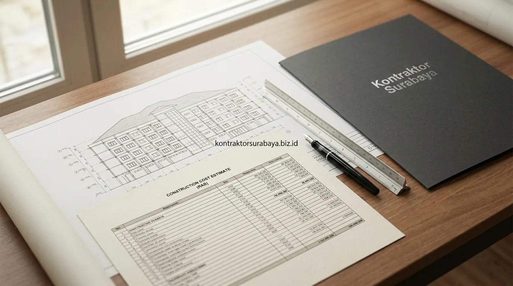

Membangun rumah impian dengan anggaran terbatas adalah impian banyak keluarga di Surabaya. Namun, menghemat biaya tidak boleh dilakukan secara sembarangan hingga mengorbankan kekuatan pondasi atau mutu beton. Kunci dari pembangunan yang hemat dan aman terletak pada kecermatan perencanaan denah, pemilihan material yang tepat guna, serta transparansi Rencana Anggaran Biaya (RAB) sejak hari pertama.
1. Strategi Efisiensi pada Tahap Desain dan Denah
Denah dengan bentuk simetris, atap sederhana, dan ukuran ruang mengikuti modul bahan bangunan pasaran adalah tiga strategi hemat biaya yang dimulai sejak tahap desain.
- Denah Simetris & Proporsional: Desain denah berbentuk kotak atau persegi panjang mengurangi sudut-sudut mati dan sisa potongan material dinding maupun lantai saat konstruksi berlangsung.
- Bentuk Atap Sederhana: Menggunakan atap pelana atau atap limasan dengan bentang efisien jauh lebih hemat biaya rangka baja ringan dan genteng dibanding model atap bertingkat dengan banyak lekukan talang.
- Ukuran Ruang Mengikuti Modul Standar: Mendesain lebar ruangan mengikuti kelipatan ukuran keramik (misal kelipatan 60 cm) atau bata ringan meminimalisir sisa potongan keramik yang terbuang sia-sia.
2. Strategi Efisiensi pada Pemilihan Material Struktur
Memilih material struktur dengan spesifikasi standar SNI dan menghindari merek premium untuk bagian yang tidak terlihat adalah dua strategi yang membantu menekan biaya tanpa mengorbankan kekuatan bangunan.
Material struktur seperti besi tulangan, semen portland, dan pasir cor sebaiknya tetap mengikuti spesifikasi standar SNI yang lolos uji teknis. Penghematan biaya dapat dialihkan secara cerdas pada material finishing yang tidak memengaruhi keselamatan struktur, seperti memilih keramik lantai lokal berkualitas, cat dinding standar bermutu pada area tersembunyi, atau kusen aluminium profil ekonomis yang tetap rapi dan fungsional.

3. Strategi Efisiensi pada Tahap Pelaksanaan dan Pengadaan
Menjadwalkan pengadaan material sesuai urutan pekerjaan dan membeli material dalam jumlah sesuai kebutuhan aktual membantu menghindari pemborosan akibat penyimpanan atau kerusakan di lokasi.
Pembelian material yang terlalu dini berisiko rusak atau aus terpapar hujan dan kelembapan cuaca di lapangan proyek, sementara pembelian yang terlambat dapat membuat tukang menganggur dan menghambat jadwal. Melalui manajemen kurva pengerjaan (just-in-time delivery), pengadaan material dilakukan tepat pada waktunya sehingga arus kas (cash flow) pemilik rumah tetap terjaga sehat.
"Penghematan biaya konstruksi yang cerdas bukan mengurangi jumlah besi atau semen, melainkan meniadakan pemborosan material dan memastikan seluruh volume pekerjaan terhitung presisi di dalam RAB."
4. Bagian Struktur yang Tidak Boleh Dikurangi Meski Ingin Hemat Biaya
Pondasi, kolom struktural, besi tulangan, dan campuran beton adalah empat komponen yang kualitasnya tidak boleh dikurangi meski anggaran terbatas.
- Kedalaman & Dimensi Pondasi: Pondasi menopang seluruh beban mati dan beban hidup bangunan, sehingga mutunya wajib sesuai daya dukung tanah hasil survei lapangan.
- Kolom Struktural: Kolom utama menjaga kestabilan dan ketahanan bangunan saat terjadi gempa atau pergeseran tanah, sehingga dimensi beton dan jumlah tulangan tidak boleh dipangkas.
- Diameter Besi Tulangan: Besi tulangan ulir dan polos harus sesuai hitungan teknis perencana sipil untuk mencegah lendutan pada pelat dak lantai 2.
- Mutu Campuran Beton Cor: Mutu beton (minimal K-225 atau K-250 untuk struktur bertingkat) mencegah risiko keretakan struktural, penurunan lantai, dan kebocoran dak di kemudian hari.
5. Bagaimana RAB yang Detail Membantu Mengontrol Anggaran Sejak Awal?
RAB yang merinci volume pekerjaan per item, bukan hanya estimasi global, membantu klien mengontrol anggaran dan menghindari pembengkakan biaya di tengah proyek.
RAB yang detail dan transparan memungkinkan pemilik rumah membandingkan alokasi dana pada setiap tahapan, mulai dari pekerjaan tanah, struktur, pasangan dinding, hingga instalasi mekanikal-elektrikal. Apabila terjadi keinginan untuk mengganti merek atau spesifikasi di tengah proyek, dampaknya terhadap total anggaran dapat langsung dihitung secara akurat tanpa menimbulkan sengketa atau biaya siluman.
Setiap strategi di atas perlu disesuaikan dengan kondisi lahan dan spesifikasi bangunan yang direncanakan, agar penghematan biaya tidak berdampak pada keamanan struktur jangka panjang. Pelajari simulasi perhitungan dan cakupan layanan pada halaman RAB & biaya bangun rumah, atau lihat jawaban atas pertanyaan umum pada halaman FAQ kami.